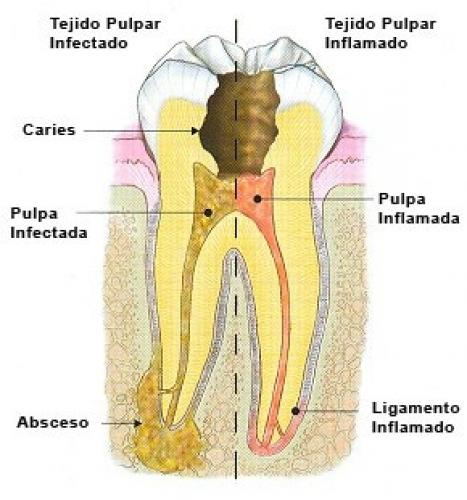

Tratamiento de conducto

¿Qué es un tratamiento de conducto?
Un tratamiento de conducto es un tipo de procedimiento de cirugía oral que limpia la caries en un diente infectado,
con el objetivo de prevenir un deterioro mayor. Los Odontólogos generales o los especialistas en tratamientos de conducto
(también conocidos como endodoncistas) realizan estos procedimientos. Durante un tratamiento de conducto, tu odontólogo extraerá
la caries de la pulpa del diente, limpiará el diente con antibióticos y sellará el área expuesta.
¿Qué problemas dentales requieren un tratamiento de conducto?
Hay varios signos y síntomas dentales que podrían requerir un tratamiento de conducto.
Si sientes dolor o molestias, tu odontólogo podrá hacerte el mejor diagnóstico.
Puede ayudar a determinar si necesitas un tratamiento de conducto o si algún otro problema es la causa del dolor o los síntomas.
Dolor y dolor dental
Si tienes dolor dental persistente o recurrente, o ambas cosas, quizás necesites un tratamiento de conducto.
Es posible que sientas el dolor en la profundidad del diente o que se manifieste como un dolor "referido" en la mandíbula o el rostro.
El dolor dental puede tener muchas causas, así que asegúrate de preguntarle al odontólogo si te preocupa.
Sensibilidad al calor o al frío
¿Sientes dolor dental cuando comes algo caliente o bebes algo frío?
Si el dolor es agudo o sordo, podría indicar que los nervios del diente están infectados o dañados.
Oscurecimiento o decoloración dental
¿Tu diente tiene un aspecto negro-grisáceo?
Es posible que esto se deba a un daño dental.
Habla con tu odontólogo si te preocupa la decoloración de los dientes.
Sensibilidad en las encías
Si tienes sensibilidad o inflamación en las encías, esto podría ser un signo de que tienes una infección.
Esta infección podría requerir un tratamiento de conducto para asegurarte de que no se disemine a otros dientes.
Abultamientos en las encías
El daño dental que requiere un tratamiento de conducto también puede causar la aparición de pequeños bultos en las encías.
También se conoce como absceso gingival.
¿Necesitas cobertura dental?
Cigna Healthcare ofrece una variedad de planes dentales asequibles,
desde planes básicos que cubren el cuidado preventivo hasta planes que ayudan a cubrir un cuidado dental complejo.
Explora nuestros planes dentales
¿Cuál es el proceso de un tratamiento de conducto?
En promedio, un tratamiento de conducto tarda aproximadamente entre 30 y 60 minutos en completarse.
Si tienes una infección que te causa hinchazón facial o fiebre, es posible que te den antibióticos antes del procedimiento.
En un procedimiento de tratamiento de conducto normal, el odontólogo:
Usará anestesia local para adormecer el diente y las encías.
Colocará una pequeña barrera de goma sobre el área afectada para aislar el diente y mantenerlo seco.
Hará una pequeña abertura en el diente para acceder a la pulpa cariada.
Extraerá los nervios, vasos sanguíneos y tejidos afectados dentro del diente.
Limpiará y desinfectará el diente.
Rellenará los canales vacíos.
Sellará el diente para prevenir una reinfección.
Colocará una corona dental a la medida sobre el diente tratado para protegerlo y restaurar la mordida.
¿Un tratamiento de conducto es doloroso?
Muchos pacientes dentales se atemorizan cuando escuchan el término "tratamiento de conducto",
pero estos procedimientos han avanzado mucho.
El proceso de hacerse un tratamiento de conducto generalmente es similar al de una obturación o empaste profundo.
Podrías experimentar cierta molestia, pero no debería ser doloroso, especialmente después de que te coloquen anestesia local.
¿Cómo es la recuperación después de un tratamiento de conducto?
La mayoría de los pacientes que se hacen un tratamiento de conducto no tienen un dolor significativo después.
Podrías experimentar cierta sensibilidad durante algunos días.
El odontólogo podría recomendarte analgésicos de venta libre para ayudarte a sobrellevar cualquier molestia.
Los efectos secundarios deberían resolverse en unas semanas.
Si tienes una molestia intensa o que empeora después de un tratamiento de conducto, comunícate con tu odontólogo de inmediato.
Deberías poder comer normalmente una vez que haya desaparecido el adormecimiento,
aunque tu odontólogo podría recomendarte que comas alimentos más blandos durante unos días.
Intenta masticar en el lado opuesto de la boca al que te realizaron el tratamiento de conducto.
¿Cuánto cuesta un tratamiento de conducto?
Dependiendo de tu plan de seguro dental, podrías tener cobertura parcial o total para los procedimientos de tratamiento de conducto.
Además, algunos planes podrían proporcionar beneficios adicionales que se pueden aplicar a cosas como empastes o tratamientos de conducto.
Si no tienes seguro dental y estás pagando de tu bolsillo, un tratamiento de conducto puede costar entre $600 y $1,500.
Esta cifra podría verse afectada por el diente (por ej., si es un diente anterior o un molar), el alcance del procedimiento,
si tu odontólogo está dentro o fuera de la red y dónde vivas.
¿Cómo puedo prevenir un tratamiento de conducto futuro?
La mejor manera de prevenir un tratamiento de conducto es por medio de la práctica habitual de cuidado de la salud dental.
Siempre recuerda cepillarte los dientes dos veces al día y usar hilo dental una vez al día.
También deberías ver a tu odontólogo para un examen dental de rutina al menos una vez al año (idealmente dos veces al año).
Si ya eres propenso al daño dental o tienes dientes debilitados, tu odontólogo también podría aconsejarte que tomes precauciones adicionales.
Estas podrían incluir:
Tomar bebidas ácidas, carbonatadas y azucaradas con moderación
Evitar los alimentos duros, pegajosos o dulces en la medida en que sea posible
Evitar morder hielo
Usar una placa protectora nocturna mientras duermes
Si tienes preguntas o inquietudes acerca de tu salud dental, asegúrate de hacérselas a tu odontólogo o especialista dental en la próxima cita.